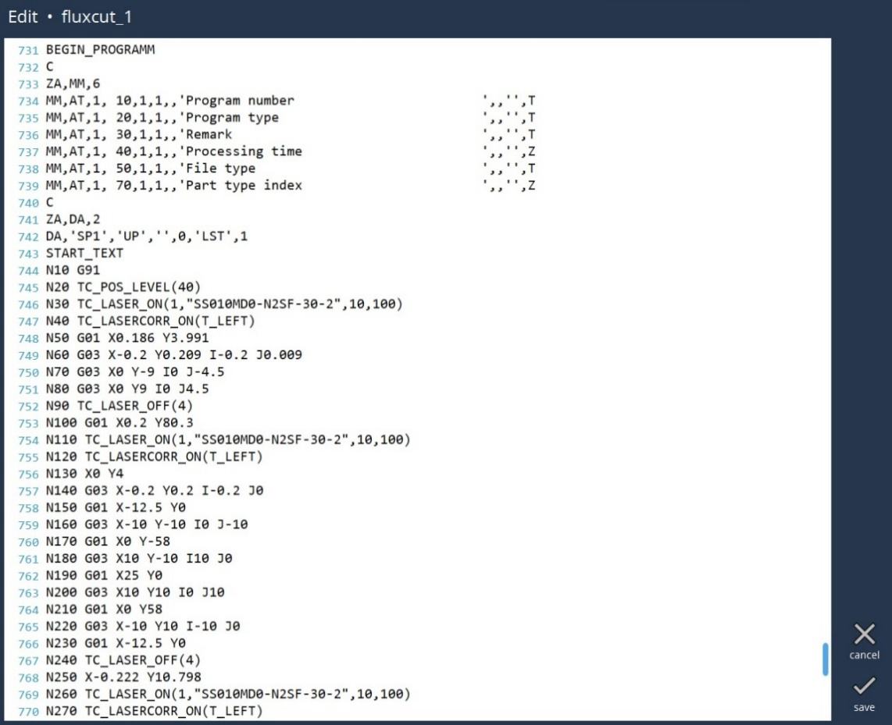

Modifica programma NC
Modifica pagina

-
Aggiungi/Elimina residuo: selezionando questa opzione viene creata una lamiera residua. È anche possibile eliminare il residuo selezionando la stessa opzione quando il residuo è già stato creato.
-
Display: l’utente può accendere o spegnere il display della macchina o lamiera.
-
Evidenzia microgiunzione : l’utente può confermare rapidamente se i contorni richiesti sono dotati o meno di microgiunzione. Selezionando questa opzione la microgiunzione viene messa in evidenza nel disegno.
-
Impostazioni: l’utente può configurare la distanza che consente di aggiungere residui.
-
Annulla: chiude la finestra di dialogo e consente di tornare alla pagina dei programmi senza salvare le modifiche.
-
Salva: questa opzione consente di salvare le modifiche apportate dall’utente.
Selezionare il programma LST che si desidera modificare e quindi premere il pulsante Salva. Si passa così alla pagina di modifica in cui l’utente può apportare le modifiche necessarie al programma. Nella pagina di testo LST è possibile apportare modifiche al programma NC. Sono disponibili le opzioni Cerca Ctrl+H e sostituisci Ctrl+F di un programma di editing di testi.
